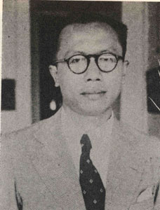

alumni bhoogere school sebelum sman 3 dan 5 berada
Pakubuwana XII
ꦦꦑꦸꦨꦸꦮꦟ꧇꧑꧒꧇
Sri Susuhunan Pakubuwana XII
Nama aslinya adalah Raden Mas Suryo Guritno, putra Pakubuwana XI yang lahir dari permaisuri KRAy. Koespariyah (bergelar GKR. Pakubuwana) pada tanggal 14 April 1925. Ia juga memiliki seorang saudara perempuan seibu bernama GRAy. Koes Sapariyam (bergelar GKR. Kedaton).
Suryo Guritno pada masa kecilnya pernah bersekolah di ELS (Europeesche Lagere School) Pasar Legi, Surakarta. Oleh teman-temannya, Suryo Guritno sering dipanggil dengan nama Bobby. Di sekolah yang sama ini pula beberapa pamannya, putra Pakubuwana X yang sebaya dengannya menempuh pendidikan. Suryo Guritno termasuk murid yang mudah bergaul dan hubungannya dengan teman-teman berlangsung akrab, bahkan ketika di sekolah pun ia bergaul tanpa memandang status sosial yang disandangnya. Waktu kecil ia gemar mempelajari tari-tarian klasik, dan yang paling digemari adalah Tari Handaga dan Tari Garuda. Ia juga pemuda yang gemar mengaji pada Bapak Pradjawijata dan Bapak Tjandrawijata dari Mambaul Ulum. Kegemarannya yang lain adalah olahraga panahan. Mulai tahun 1938 Suryo Guritno terpaksa berhenti sekolah cukup lama, sekitar lima bulan, karena harus mengikuti ayahandanya yang memperoleh mandat mewakili kakeknya, Pakubuwana X, pergi ke Belanda bersama raja-raja di Hindia Belanda saat itu untuk menghadiri undangan perayaan peringatan 40 tahun kenaikan takhta Ratu Wilhelmina.
Setelah itu, ia melanjutkan pendidikan ke Hoogere Burgerschool te Bandoeng (HBS Bandung

Ir. H. Raden Djoeanda Kartawidjaja
Ir. H. Djuanda dilahirkan di Tasikmalaya, 14 Januari 1911, merupakan anak pertama pasangan Raden Kartawidjaja dan Nyi Monat.[3] Ayahnya adalah seorang guru di Hollandsch Inlansdsch School (HIS). Pendidikan sekolah dasar diselesaikan di HIS dan kemudian pindah ke Europesche Lagere School (ELS) yang ditamatkannya pada 1924.[3] Selanjutnya oleh ayahnya ia dimasukkan ke sekolah menengah khusus orang Eropa yaitu Hoogere Burgerschool te Bandoeng (HBS Bandung, sekarang ditempati SMA Negeri 3 Bandung dan SMA Negeri 5 Bandung) dan lulus tahun 1929. Pada tahun yang sama dia masuk ke Technische Hoogeschool te Bandoeng (THS) sekarang Institut Teknologi Bandung (ITB) di Bandung, mengambil jurusan teknik pengairan dan jalan (Wegen en Waterbouwkunde) dan lulus tahun 1933 dengan gelar Civil Ingineur.[4] Semasa mudanya Djuanda hanya aktif dalam organisasi non politik yaitu Paguyuban Pasundan dan anggota Muhammadiyah, dan pernah menjadi pimpinan sekolah Muhammadiyah. Karier selanjutnya dijalaninya sebagai pegawai Departemen Pekerjaan Umum provinsi Jawa Barat, Hindia Belanda sejak tahun 1939.
Ir. H. Djuanda adalah seorang abdi negara dan abdi masyarakat yang patut diteladani. Meniti karier dalam berbagai jabatan pengabdian kepada negara dan bangsa. Semenjak lulus dari TH Bandung (1933) dia memilih mengabdi di tengah masyarakat. Dia memilih mengajar di SMA Muhammadiyah di Jakarta. Ia juga ditawari menjadi asisten dosen di TH Bandung. Selain itu, ia juga memulai keaktifan organisasinya sejak sebelum kemerdekaan di Paguyuban Pasoendan pada tahun 1934.
Ingkang Sinuwun Sri Sultan
Hamengkubuwana IX
ꦲꦩꦼꦁꦏꦸꦨꦸꦮꦤ꧇꧙꧇
Lahir di Ngasem, Sompilan, Yogyakarta dengan nama Gusti Raden Mas Dorodjatun, Hamengkubuwana IX merupakan anak kesembilan[2] Gusti Pangeran Puruboyo dari istri utamanya, Raden Ajeng Kustilah.[3] Pada tahun 1914, ketika Dorodjatun belum genap tiga tahun, Gusti Pangeran Puruboyo diangkat menjadi Putra Mahkota Yogyakarta.[b] Karena suaminya menjadi Putra Mahkota, Raden Ajeng Kustilah mendapat gelar Kanjeng Raden Ayu Adipati Anom pada tahun 1915.[5] Meskipun demikian, KRA Adipati Anom tidak sempat menjadi Ratu Yogyakarta. Ia dipulangkan ke rumah ayahnya sekitar tahun 1918–1919.[6] Monfries serta Roem dkk. menuliskan bahwa penyebab pemulangan ini adalah retaknya hubungan antara KRA Adipati Anom dengan mertuanya;[7] sementara Romo Tirun[c] mengatakan bahwa penyebabnya adalah KRA Adipati Anom merupakan keturunan Untung Suropati yang merupakan musuh Belanda, sehingga kejadian ini bermaksud untuk melindungi KRA Adipati Anom.[8]
Ketika berumur empat tahun, Dorodjatun diperintah ayahnya untuk mulai tinggal terpisah dari keraton.[4] Dorodjatun kecil menangis keras dan terus memeluk salah satu tiang di keraton sebelum dapat dipisahkan.[9] Ia tinggal bersama keluarga Mulder, orang Belanda yang menjabat sebagai Kepala Sekolah Neutrale Hollands Javaansche Jongens School dan tinggal di daerah Gondokusuman.[10] Ketika tinggal bersama keluarga Mulder, Dorodjatun diberi nama panggilan Henkie ("Henk kecil") yang diambil dari nama Pangeran Hendrik dari Belanda.[11] Nama panggilan ini terus ia gunakan hingga bersekolah dan kuliah di Belanda, serta oleh teman-teman dekatnya tetap digunakan sampai masa tuanya sebagai Hamengkubuwana IX.[12]
Henkie mendapatkan pendidikan pertamanya di taman kanak-kanak Frobel School kemudian Eerste Europese Lagere School B untuk pendidikan dasarnya. Setahun kemudian, ia pindah ke kediaman keluarga Cock dan bersekolah di Neutrale Europeesche Lagere School hingga lulus pada bulan Juli 1925.[13] Ayahnya diangkat menjadi Hamengkubuwana VIII ketika ia duduk di kelas III sekolah tersebut,[14] yaitu pada bulan Februari 1921.[15] Di sekolah tersebut, Dorodjatun bertemu dan berteman dengan Sultan Hamid II yang dijuluki Mozes saat itu.[16]
Dorodjatun mengenyam pendidikan menengahnya di Hoogere Burgerschool (HBS) Semarang mulai bulan Juli 1925. Ia tinggal bersama keluarga Voskuil, seorang sipir penjara di Semarang. Karena iklim Semarang yang cukup panas, Dorodjatun merasa tidak cocok dan kemudian dipindahkan oleh ayahnya ke HBS Bandoeng pada tahun 1928. Di sana, ia bersama kakaknya, BRM Tinggarto, tinggal bersama dengan seorang tentara militer Belanda, Letnan Kolonel De Boer.[17]